Next: Tension-only and compression-only materials. Up: Materials Previous: Plasticity with Johnson-Cook hardening. Contents
The theory and algorithms used to code the classical Mohr-Coulomb plasticity model are primarily taken from [100] and [21] and the references therein.
The Mohr-Coulomb plasticity is non-associative with a piecewise linear yield
surface 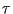 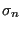 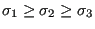 an a piecewise linear plastic potential
an a piecewise linear plastic potential  . The basic idea is
that the shear stress at which plastic flow occurs increases with increasing
pressure, similar to contact sliding. This is illustrated in Figure
141 showing the shear stress
. The basic idea is
that the shear stress at which plastic flow occurs increases with increasing
pressure, similar to contact sliding. This is illustrated in Figure
141 showing the shear stress
The yield surface satisfies:
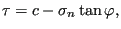 |
(407) |
where  is the cohesion. This is equivalent to (cf. Figure 141)
is the cohesion. This is equivalent to (cf. Figure 141)
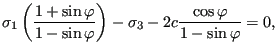 |
(408) |
or
where
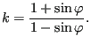 |
(410) |
 is called the friction angle. Similarly, the plastic potential is
defined by:
is called the friction angle. Similarly, the plastic potential is
defined by:
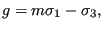 |
(411) |
where
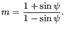 |
(412) |
 is called the dilation angle. It describes to what extent the volume of
the material changes due to shear motion. For a positive value of
is called the dilation angle. It describes to what extent the volume of
the material changes due to shear motion. For a positive value of  the
volume increases, as for dense sand. For a negative value the volume
decreases, as for loose sand. In the latter case the grains fit better due to
the motion. You can easily illustrate this by pouring suger in a bowl. Shaking
the bowl the volume will decrease and more sugar will fit.
the
volume increases, as for dense sand. For a negative value the volume
decreases, as for loose sand. In the latter case the grains fit better due to
the motion. You can easily illustrate this by pouring suger in a bowl. Shaking
the bowl the volume will decrease and more sugar will fit.
As mentioned, the yield surface is piecewise linear, so the gradient of the surface is not continuous. This complicates matters. Now, looking at the yield surface and plastic potential it can be observed that it contains only principal stresses. Assuming the material to be elastically isotropic, this allows us to perform all operations in principal stress space, thereby reducing the tensors to vectors. This was first proposed in [20].
Replacing
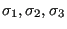 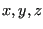 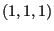
Figure 142 shown a view
on a plane orthogonal to the axis and through the origin. The six
sectors are bordered by planes going through the x-, y- and z- axes and
containing the -axis. The cross section of this plane with the yield
surface is an irregular hexagon (dashed line). Since the principal stresses
can always be rearranged such that
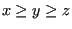
Figure 143 shows the yield surface viewed from the apex and
looking in the direction of
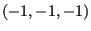 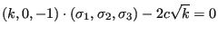 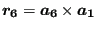 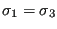 is shown. For sector 1 this is
immediately clear from Equation (409) which can be written as
is shown. For sector 1 this is
immediately clear from Equation (409) which can be written as
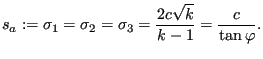 |
(413) |
Therefore, the equation of the intersection line between section 6 and 1
satisfied
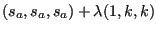 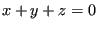
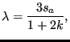 |
(414) |
yielding the location of point A in Figure 142. For point B one gets
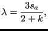 |
(415) |
which is farther away from the origin since 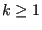 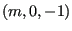 and amounts for sector 1
to
and amounts for sector 1
to
The governing equations of an elastic material with Mohr-Coulomb plasticity read:
Elastic stress-strain relations
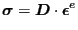 |
(416) |
Internal variable relationship
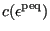 |
(417) |
Yield surface
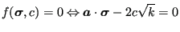 |
(418) |
Evolution equations
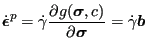 |
(419) |
Kuhn-Tucker equations
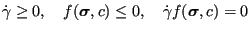 |
(420) |
Consistency condition
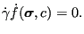 |
(421) |
Notice that in the above equatons
 and
and
 are vectors in principal space.
are vectors in principal space.
In order to explain the numerical procedure it is assumed that all variables
are known at the end of increment  (corresponding to time
(corresponding to time  ) and that
their values are sought at the end of increment
) and that
their values are sought at the end of increment  (corresponding to time
(corresponding to time
 ). The input to the algorithm is a change on total strain
.
). The input to the algorithm is a change on total strain
.
At first it is assumed that now plasticity occurs in the new increment, i.e.:
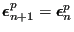 |
(422) |
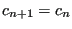 |
(423) |
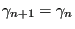 |
(424) |
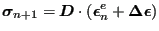 |
(425) |
If
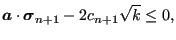 |
(426) |
the solution is found. If not,
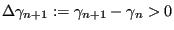 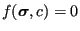 can be written as:
can be written as:
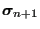 |
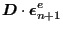 |
(427) | |
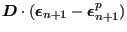 |
(428) | ||
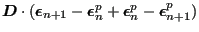 |
(429) | ||
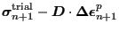 |
(430) | ||
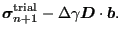 |
(431) |
In the last equation the evolution equation was used (flow rule). Defining
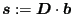
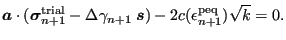 |
(432) |
Notice that
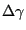 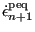 points in the direction of the stress correction
w.r.t. the trial stress. In order to solve this equation a relationship between
points in the direction of the stress correction
w.r.t. the trial stress. In order to solve this equation a relationship between
 and
and
| (433) |
from which:
| (434) | |||
| (435) | |||
| (436) | |||
| (437) | |||
| (438) |
Defining and the yield equation now amounts to:
| (439) |
This is a nonlinear equation in . Using the Newton-Raphson procedure the first derivative is needed, which yields:
| (440) |
Starting with an initial guess , one arrives at by solving the equation:
| (441) |
or
| (442) |
where
| (443) |
This works as long a the return is to a face of the yield surface. Since the return vector for sector 1 is one can graphically plot the region in three-dimensional principal stress space which is returned to the yield face in sector 1 (Figure 144). It is the space for which
| (444) |
This is called region I. The space within sector 1 in between region I and sector 2 and underneath the apex is mapped onto the intersection line of face 1 and face 2 of the yield surface (characterized by the equation ). It is characterized by the equations
| (445) |
and is called region II of sector 1. Similary for the space in between region I and sector 6 and underneath the apex satisfying
| (446) |
This is region III. Finally, the region above the apex corresponding to
| (447) |
is returned to the apex and is called region IV.
Returning the trial stress to the intersection line of two yield faces implies that the final state has to satisfy both face equations. The equivalent plastic strain now satisfies:
| (448) |
and the yield surface equations amount to:
| 0 | (449) | ||
| (450) |
Applying Newton-Raphson now leads to:
| (451) |
where
| (452) |
and
| (453) |
For a return to the apex the yield equations of sector 1, 2 and 6 have to be satisfied yielding 3 equations in 3 unknowns.
To calculate the consistent tangent the change of stress due to a change in total strain is needed. The change of stress in the present increment amounts to:
| (454) | |||
| (455) | |||
| (456) | |||
| (457) | |||
| (458) |
Now, a relationship between and is needed. This is obtained from the yield equation:
| (459) |
from which
| (460) |
Substituting the previously obtained expression for yields (dropping the bound of the derivatives to simplify the notation; the derivatives are to be taken at the end of the present increment):
| (461) |
from which
| (462) |
Finally one obtains for the elastoplastic consistent tangent
| (463) |
The derivation of the elastoplastic consistent tangent for a return to the intersection between face 1 and face 2 is similar. Now, a change in stress increment amounts to:
| (464) |
A relationship between the change in and the change in can again be obtained by considering the adjacent yield faces (i=1,2):
| (465) |
from which
| (466) |
or
| (467) |
Denoting the inverse of the left hand matrix by the solution of the above system can be written as:
| (468) | |||
| (469) |
leading to:
| (470) |
The derivation for the return to the apex is similar (now three equations have to be satisfied).
The tangent derived here only applies to the normal directions. It has to be complemented by a shear part in the form [20]:
| (471) |
where
| (472) |
Finally, the tangent matrix
 has to be transformed back into
the global system yielding
:
has to be transformed back into
the global system yielding
:
| (473) |
where is the transformation matrix in equation (A5) in [20]. Notice that equation (A6) in [20] is wrong and has to be replaced by the equation above. Similarly the stress is to be transformed into the global system by:
| (474) |
In CalculiX, the routine has been implemented for linear strains. As soon as NLGEOM is activated, however, the material law is applied to the corotational Cauchy stress vs. the corotational logarithmic strain (in routine umat_abaqusnl_total.f) yielding good results for large deformations too.